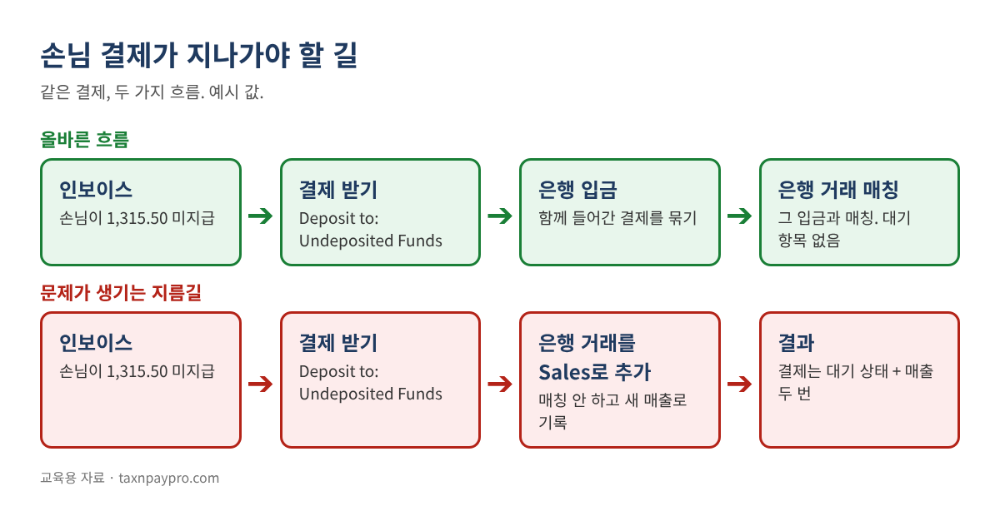
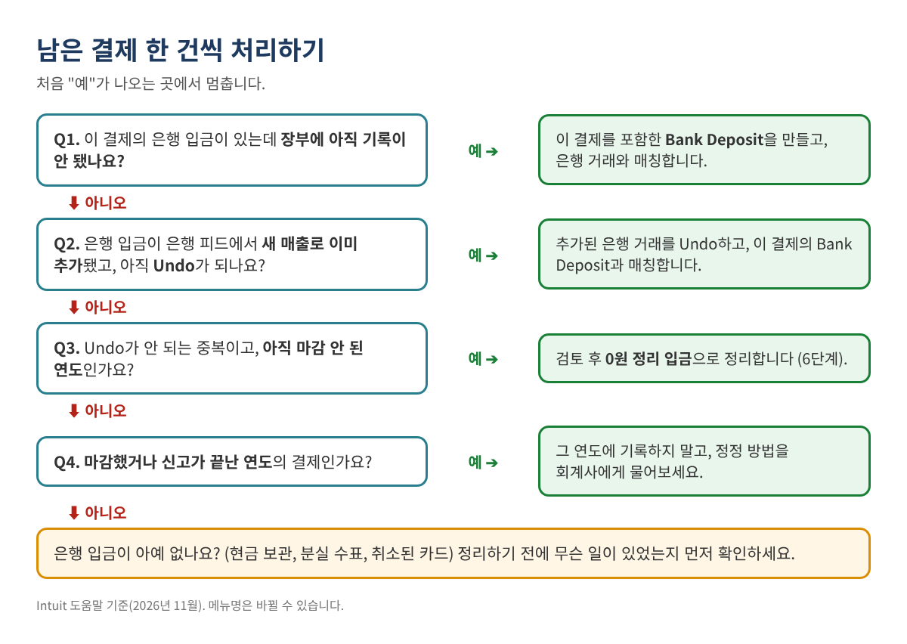
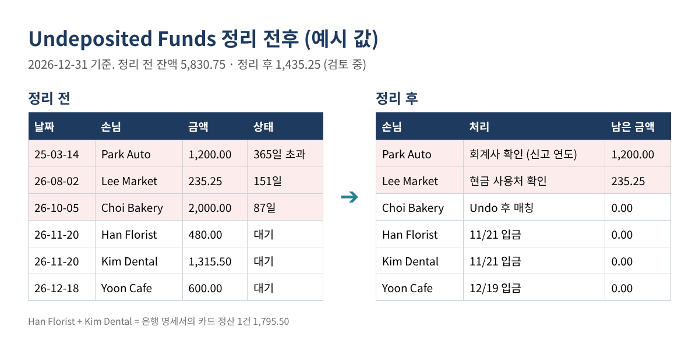

Undeposited Funds에 오래 남은 입금, 매출 중복 없이 깨끗하게 정리하는 방법
대차대조표(Balance Sheet)에 Undeposited Funds(일부 버전에서는 "Payments to deposit")가 수천 달러 남아 있습니다. 입금(Bank Deposit) 화면을 열 때마다 작년 것까지 오래된 손님 결제가 그대로 떠 있습니다. 분개(Journal Entry)로 잔액을 0으로 만들어 봤는데도 입금 화면에서는 사라지지 않습니다.
소상공인 장부 정리에서 가장 흔한 문제 중 하나이고, 세금과도 직결됩니다. 많은 경우 돈은 이미 은행에 들어갔는데 다른 방식으로 한 번 더 기록돼 매출이 두 번 잡혀 있기 때문입니다. 이 글은 남은 결제를 한 건씩 분류하고, 어디로 갔는지 증명하고, 새로운 문제 없이 정리하는 방법을 설명합니다.
이런 분께 필요합니다: 인보이스나 세일즈 영수증으로 수표·현금·카드 대금을 받는 사장님과 북키퍼, Undeposited Funds에 오래된 항목이 남아 있는 경우.
Undeposited Funds는 원래 이렇게 움직입니다
Undeposited Funds는 임시 보관 계정입니다. 손님 결제를 기록하면 여기서 기다리다가, 같은 날 은행에 함께 들어간 결제들을 묶는 은행 입금(Bank Deposit)을 기록할 때 빠져나갑니다. Intuit 도움말도 이 계정의 결제는 "Bank Deposit 창에 자동으로 나타난다"고 설명합니다. 입금을 기록하고 은행 거래를 그 입금과 매칭하면 대기 항목은 남지 않습니다.

결제가 묶이는 이유는 대개 이렇습니다.
- 은행 피드 거래를 매칭하지 않고 새 매출(Sales 등)로 추가했다. 매출 중복이 생기는 경우입니다.
- 여러 결제가 한 번에 입금됐다(카드 정산, 입금표 한 장). 그런데 아무도 묶지 않았다.
- 결제를 두 번 입력했거나, 손님·금액을 잘못 입력했다.
- 현금을 은행에 넣지 않았다. 비용으로 쓰거나 금고에 그대로 있다.
- 분개로 계정 잔액만 0으로 만들었다. 결제 자체는 입금 처리가 안 돼 입금 화면에 계속 보인다.
1단계: 대기 중인 결제를 모두 뽑기
QuickBooks Online
- All apps > Accounting > Chart of accounts로 가서 Detail type이 Undeposited Funds인 계정을 찾습니다(이름이 바뀌어 있을 수 있습니다).
- View register에서 기간을 All로 두고 목록을 엑셀로 내보내거나 복사합니다.
- + Create > Bank Deposit 화면에 뜨는 결제 목록으로도 볼 수 있습니다. 아직 저장하지는 마세요.
QuickBooks Desktop
- Lists > Chart of Accounts에서 Undeposited Funds를 마우스 오른쪽 클릭하고 QuickReport를 선택합니다.
- Dates를 All로 두고, Customize Report > Filters에서 Cleared를 No로 설정한 뒤 OK. 아직 입금 처리 안 된 결제만 보입니다.
- 엑셀로 내보냅니다.
목록을 UF 시트에 날짜(A), 손님(B), 금액(C), 결제 방법(D) 순서로 붙여 넣습니다.
2단계: 결제별 경과일 계산
H1 칸에 점검 기준일(예: 2026-12-31)을 넣고 다음 수식을 추가합니다.
E: =$H$1-A2 F: =IF(E2<=30,"0-30",IF(E2<=90,"31-90",IF(E2<=365,"91-365","365+")))
"0-30"은 이번 주 입금을 기다리는 경우가 많습니다. 그보다 오래된 항목이 진짜 정리 대상입니다.
| 날짜 | 손님 | 금액 | 경과일 | 구간 |
|---|---|---|---|---|
| 2025-03-14 | Park Auto | 1,200.00 | 657 | 365+ |
| 2026-08-02 | Lee Market | 235.25 | 151 | 91-365 |
| 2026-10-05 | Choi Bakery | 2,000.00 | 87 | 31-90 |
| 2026-11-20 | Han Florist | 480.00 | 41 | 31-90 |
| 2026-11-20 | Kim Dental | 1,315.50 | 41 | 31-90 |
| 2026-12-18 | Yoon Cafe | 600.00 | 13 | 0-30 |
| 합계 | 5,830.75 |
표 1. 예시 값, 2026-12-31 기준. 합계는 같은 날짜 대차대조표의 Undeposited Funds 잔액과 같아야 합니다.
3단계: 결제마다 은행 입금 찾기
은행 명세서 입금 내역을 Bank 시트에 붙여 넣습니다(A열 날짜, C열 금액). 결제 한 건이 그대로 입금된 경우는 결제일부터 일주일 안에 같은 금액이 있는지 봅니다.
G: =IF(COUNTIFS(Bank!$C:$C,C2,Bank!$A:$A,">="&A2,Bank!$A:$A,"<="&A2+7)>0,"은행 일치","")
여러 결제가 한 번에 들어간 경우는 Bank 시트 D열에 입금마다 번호(예: DEP-1121)를 붙이고, 그 입금에 속한다고 보는 결제 옆(UF 시트 H열)에 같은 번호를 적은 뒤 합계를 비교합니다.
Bank!E: =SUMIFS(UF!$C:$C, UF!$H:$H, D2) 이 입금에 배정한 결제 합계 Bank!F: =C2-E2 차액 (0.00이어야 함)
예시에서 은행에는 11/21에 1,795.50이 들어왔습니다. Han Florist 480.00 + Kim Dental 1,315.50 = 1,795.50, 차액 0.00. 결제 두 건짜리 입금 하나입니다.
4단계: 그 입금이 이미 다른 방식으로 기록됐는지 확인
가장 많이 건너뛰는 단계입니다. 은행 레지스터에서 결제일 전후의 입금을 보세요. 맞는 은행 입금이 이미 레지스터에 있다면 어느 계정으로 기록됐는지 확인합니다. 매출 계정(Sales, Services, Uncategorized Income)으로 바로 들어갔다면 같은 돈이 손님 결제로 한 번, 새 매출로 또 한 번, 두 번 장부에 있는 것입니다.
예시에서는 10/06 모바일 입금 2,000.00이 은행 피드에서 Sales로 추가됐고, Choi Bakery의 결제 2,000.00은 여전히 Undeposited Funds에 있습니다. 매출이 2,000.00 부풀려져 있습니다.
5단계: 줄마다 처리 계획 세우기
| 손님 | 금액 | 확인 결과 | 처리 |
|---|---|---|---|
| Han Florist + Kim Dental | 1,795.50 | 11/21 카드 정산, 미기록 | 두 결제를 묶어 입금 1건 기록 |
| Yoon Cafe | 600.00 | 12/19 은행 입금, 미기록 | 입금 기록 |
| Choi Bakery | 2,000.00 | 10/06 은행 거래를 Sales로 추가함 | 추가한 거래 Undo 후 이 결제의 입금과 매칭 |
| Lee Market | 235.25 | 은행 입금 없음 (현금) | 현금 사용처를 사장님이 확인 |
| Park Auto | 1,200.00 | 2025년 입금이 Sales로 기록, 2025 신고 완료 | 회계사 확인, 2025년에 기록 금지 |
표 2. 예시 계획. 지금 고치는 것은 위 세 줄뿐이고, 나머지는 답을 받은 뒤 처리합니다.

6단계: 장부 고치기
빠진 입금 기록하기 (QuickBooks Online)
- + Create > Bank Deposit을 선택합니다.
- 은행 Account를 고릅니다.
- 함께 입금된 결제만 체크합니다(Han Florist, Kim Dental).
- 합계가 은행 명세서 금액(1,795.50)과 같은지 확인하고 Save and close.
- Bank transactions에서 11/21 은행 거래를 추가(Add)하지 말고 이 입금과 매칭합니다.
카드사가 수수료를 뗐다면, Intuit 도움말대로 원래 결제를 고치지 말고 Add funds to this deposit 칸에 은행 수수료 계정으로 마이너스 금액을 넣습니다.
매출로 추가된 은행 거래 고치기
Intuit의 은행 피드 중복 거래 도움말은 "추가된 입금을 Undo하고 결제와 매칭하라"고 안내합니다. Bank transactions > Categorized에서 Added or Matched 링크를 선택해 Undo하고, 이 결제의 Bank Deposit을 기록한 다음, 은행 거래를 그 입금과 매칭합니다.
Undo가 안 되는 중복 정리하기 (검토 후)
오래됐거나 이미 대사가 끝났거나 Undo가 안 되는 중복이라면, 많은 회계사가 0원 정리 입금을 씁니다. + Create > Bank Deposit에서 남은 결제를 체크하고, Add funds to this deposit에 같은 금액을 마이너스로, 회계사가 정한 계정(대개 두 번 잡힌 매출 계정)으로 넣습니다. 입금 합계가 0.00이라 은행 잔액은 변하지 않고, 결제는 입금 화면에서 사라집니다. Intuit 도움말은 이 칸에 수수료를 마이너스로 넣는 예를 보여 줍니다. 중복을 상쇄하는 데 쓰는 것은 실무에서 흔한 정리 방법이지 Intuit의 별도 기능은 아니므로, 계정과 날짜는 회계사와 확인하세요.
Undeposited Funds를 대변으로 하는 분개는 잔액만 바꿀 뿐 입금 화면의 결제는 없애지 못합니다. 반드시 입금(Bank Deposit)으로 처리하세요.
QuickBooks Desktop
Banking > Make Deposits에서 Payments to Deposit 창의 결제를 체크하고 같은 방식으로 입금을 마칩니다. 마이너스 줄은 Make Deposits 창 아래쪽에 넣습니다.
7단계: 끝났는지 증명하기
점검 기준일로 대차대조표를 뽑아 봅니다. Undeposited Funds 잔액은 아직 검토 중인 항목 합계(예시는 1,435.25)와 같아야 하고, 은행 계정 대사도 그대로 맞아야 합니다. 은행 잔액이 움직였다면 어떤 입금이 다른 계정이나 날짜로 들어간 것입니다.

자주 하는 실수
- 분개로 Undeposited Funds를 0으로 만듦. 잔액은 맞아 보여도 결제는 입금 화면에 남아 나중에 또 입금 처리됩니다.
- 어느 것이 진짜 중복인지 보지 않고 전부 한 계정으로 한 번에 정리.
- 카드 정산처럼 한 번에 들어온 돈을 결제별로 따로 입금 처리. 은행 거래와 영원히 맞지 않습니다.
- 신고가 끝난 연도에 기록. 이미 신고한 소득이 바뀝니다.
- 정리 전에 Undeposited Funds 기본 설정부터 끔. 오래된 항목은 그대로 남습니다.
자주 묻는 질문
QuickBooks Payments로 받은 인보이스 결제도 Undeposited Funds를 거치나요?
Intuit 도움말에 따르면 QuickBooks Payments로 처리된 인보이스 결제는 자동으로 처리돼 Undeposited Funds가 필요 없습니다. 다른 결제사 카드 대금은 대개 거칩니다.
오래된 결제를 그냥 지우면 안 되나요?
결제를 지우면 인보이스가 다시 열려 손님이 안 낸 것처럼 보입니다. 실수로 입력한 결제만 지우세요.
얼마나 오래되면 문제인가요?
정해진 기준은 없지만, 월말 마감을 한 번 넘긴 항목은 확인해 볼 만합니다. 마감된 연도 항목은 회계사와 상의하세요.
세금이 바뀌나요?
바뀔 수 있습니다. 두 번 잡힌 매출을 없애면 매출이 줄어듭니다. 신고가 끝난 연도라면 아무것도 바꾸기 전에 세무 대리인과 상의하세요.
체크리스트
- ☐ 대기 중인 결제 전부 내보내기, 합계 = 대차대조표 잔액
- ☐ 결제별 경과일·구간 계산
- ☐ 은행 입금 찾기(단건 또는 묶음), 없으면 "없음" 표시
- ☐ 은행 레지스터에서 매출로 바로 기록된 입금 확인
- ☐ 줄마다 처리 계획 작성, 질문은 사장님·회계사에게 전달
- ☐ 입금 기록, 은행 거래 매칭, 중복은 Undo 또는 검토 후 정리
- ☐ 대차대조표와 은행 대사 다시 확인
엑셀 파일이 필요하다면
Undeposited Funds Cleanup Workbook(미입금 자금 정리 워크북)은 Etsy와 Gumroad에서 영문판과 영한 병기판으로 판매 중입니다. 결제별 경과일, 은행 입금 자동 제안, 묶음 입금 합계, 매출 중복 의심 표시, 검토용 0원 정리 계획을 만들어 주고 6쪽 가이드가 함께 들어 있습니다.
이 글은 교육용 자료이며 세무·법률·회계 자문이 아닙니다. 결과는 각자의 기록에 따라 다르며 특정 결과를 보장하지 않습니다. 예시 값은 가상입니다. 메뉴 이름은 바뀔 수 있습니다. QuickBooks is a registered trademark of Intuit Inc.; not affiliated with or endorsed by Intuit.
출처(2026년 11월 확인): Intuit, "Deposit payments into the Undeposited Funds account in QuickBooks Online": https://quickbooks.intuit.com/learn-support/en-us/help-article/payroll-setup/deposit-payments-undeposited-funds-account-online/L1td0m8Z2_US_en_US · Intuit, "Record and make bank deposits in QuickBooks Online": https://quickbooks.intuit.com/learn-support/en-us/help-article/bank-deposits/record-make-bank-deposits-quickbooks-online/L2BBZOPdr_US_en_US · Intuit, "Fix duplicate transactions in QuickBooks Online bank feeds": https://quickbooks.intuit.com/learn-support/en-us/help-article/duplicate-transactions/fix-duplicate-transactions-quickbooks-online-bank-feeds/L1fjxl88f_US_en_US · Intuit, Desktop 입금 도움말: https://quickbooks.intuit.com/learn-support/en-us/help-article/bank-deposits/deposit-payments-undeposited-funds-account-desktop/L0MPCun2P_US_en_US